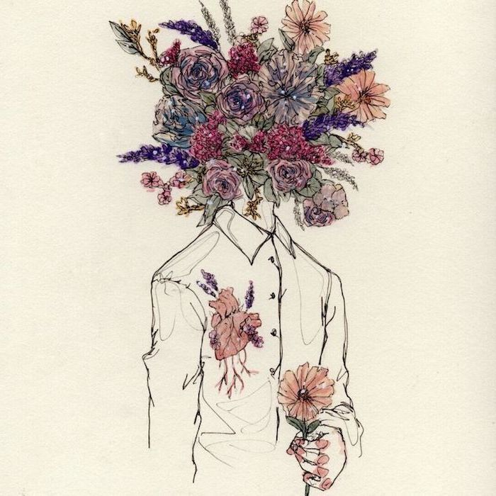

Coordination Gross Neurological
Cerebellar examination
Test Yourself
DANISH
D
Dysdiadochokinesia
Rapid alternation e.g Flappy fish
A
Ataxia (gait and posture)
Walk in a straight line e.g. heel to toe
N
Nystagmus
Big H
I
Intention tremor
Fine motor movement e.g finger to nose
S
Slurred, staccato speech
Assess when talking with patient
H
Hypotonia/heel-shin test
